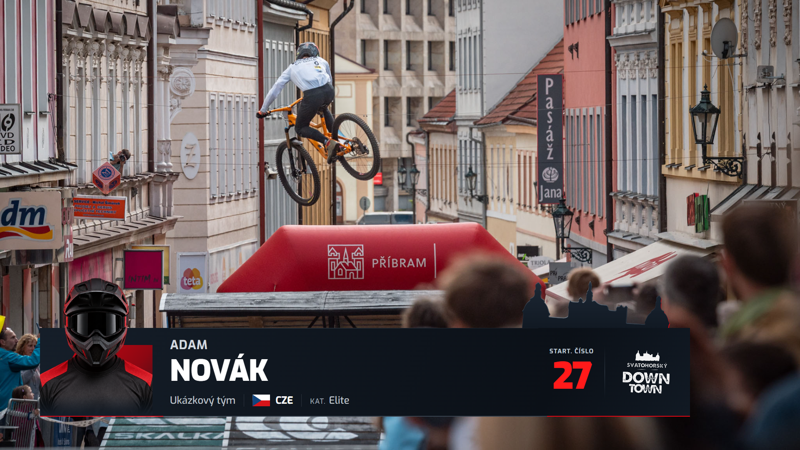

VARIANTA A
Horizontální lišta
Nižší reliéf. Jemná hrana. Souvislá tmavá plocha.
Červené číslo a bílé logo jsou součástí karty.

VARIANTA B
Kompaktní blok
Architektonický obrys korunuje kompaktní kartu.
Kompaktní podpis akce ve společném tmavém záhlaví.